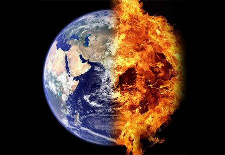

Cuando escuchamos o leemos sobre temas como Cambio Climático y Efecto invernadero, quizá lo primero que nos viene a la mente es que el CO2(Dióxido de carbono) está causando muchos problemas en el mundo. Pero este gas no necesariamente es un villano total, te invito a que conozcas la importancia que éste tiene para nuestro planeta.
El CO2 y otros gases (nitrógeno, oxígeno, neón, xenón, helio, metano y el vapor del agua) son importantes para que exista vida en el planeta Tierra, ya que forman parte de los gases conocidos como “gases de efecto invernadero” (GEI).
Los gases de efecto invernadero (GEI) retienen parte del calor que la superficie terrestre emite cuando se calienta por la acción de los rayos solares. Por ello el efecto invernadero ha permitido que la temperatura de la Tierra sea favorable para los seres vivos.
Hace varios años la Tierra había mantenido una temperatura promedio de 15º Celsius (C), pero de acuerdo con datos de la Administración Nacional de la Aeronáutica y del Espacio (NASA por sus siglas en inglés), desde 1880 la temperatura de la Tierra ha aumentado alrededor de 0.8º C. Este aumento se atribuye al incremento de GEI en la atmósfera, ya que, desde el periodo industrial, las concentraciones de algunos de estos gases han venido incrementándose de forma alarmante.
El caso del incremento del CO2 resalta debido a actividades humanas como la quema de combustibles fósiles y el cambio en el uso de suelo.